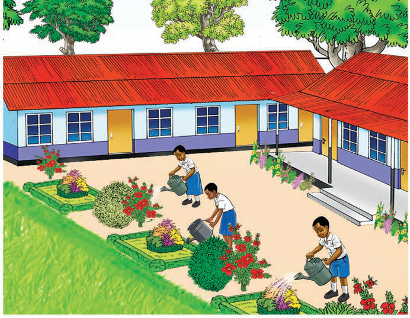

(b)
Three pupils water flowers and small plants in the school compound. The school garden looks clean and well cared for.
Questions
1. What actions are described or shown in pictures (a) and (b)?
2. Why is it important to plant trees and flowers around the school compound?
Activity 7
(a) Use ICT tools to listen to or watch videos, or view pictures showing how to plant trees and flowers in the environment. Explain the steps for planting trees and flowers.
(b) Plant trees and flowers in the school compound using the tools you have learned.